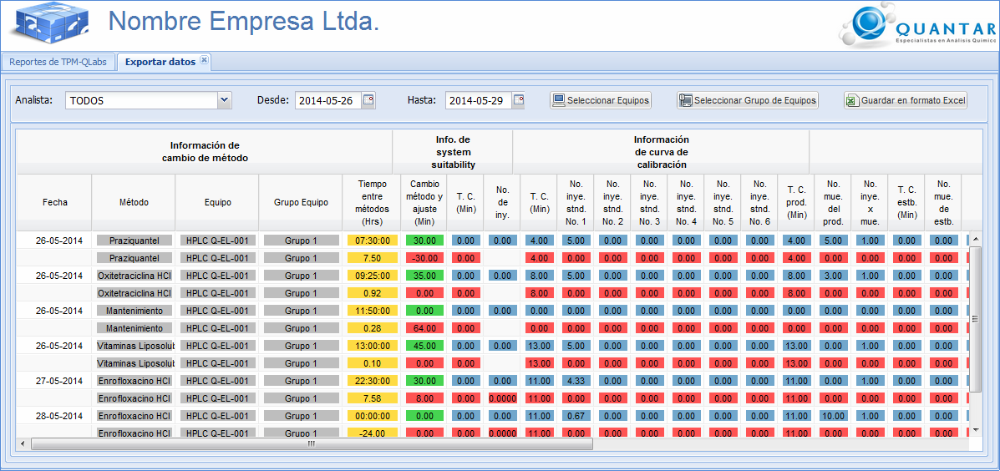

MANUAL DE USUARIO
TPM-QLabs - EXPORTAR DATOS
Exportar
datos de corridas analíticas
Para exportar los datos de corridas analíticas, seleccione el periodo entre fechas y si es necesario los equipos y/o el analista. El sistema desplegará en la parte inferior de la pantalla una lista con los datos según la configuración dada por usted. En caso de querer guardar los datos en formato de hoja de cálculo pulse el botón Guardar en formato Excel, por lo que el sistema descargará un archivo con los datos de la corrida que se mostraron en la lista. En la Figura 1 se muestra la lista de datos de corrida.
Para configurar el reporte que permite exportar datos, es posible seleccionar el periodo entre fechas a través de los campos Desde y Hasta, el analista, los equipos y los grupos de equipos registrados en el sistema. Para seleccionar los equipos, el usuario debe dar clic en el botón Seleccionar Equipos y se desplegará una interfaz con los equipos disponibles. A continuación el usuario debe seleccionar los equipos de su interés y dar clic en el botón Aceptar, tal y como se muestra en la Figura 2. Para seleccionar los grupos de equipos, el usuario debe dar clic en el botón Seleccionar Grupo de Equipos y se desplegará una interfaz con los grupos de equipos registrados. El usuario debe seleccionar de los grupos de equipos ddisponibles, aquellos grupos que son de su interés y dar clic en el botón Aceptar, tal y como se muestra en la Figura 3.
Figura 1. Pantalla exportar datos.Para exportar los datos de corridas analíticas, seleccione el periodo entre fechas y si es necesario los equipos y/o el analista. El sistema desplegará en la parte inferior de la pantalla una lista con los datos según la configuración dada por usted. En caso de querer guardar los datos en formato de hoja de cálculo pulse el botón Guardar en formato Excel, por lo que el sistema descargará un archivo con los datos de la corrida que se mostraron en la lista. En la Figura 1 se muestra la lista de datos de corrida.
Para configurar el reporte que permite exportar datos, es posible seleccionar el periodo entre fechas a través de los campos Desde y Hasta, el analista, los equipos y los grupos de equipos registrados en el sistema. Para seleccionar los equipos, el usuario debe dar clic en el botón Seleccionar Equipos y se desplegará una interfaz con los equipos disponibles. A continuación el usuario debe seleccionar los equipos de su interés y dar clic en el botón Aceptar, tal y como se muestra en la Figura 2. Para seleccionar los grupos de equipos, el usuario debe dar clic en el botón Seleccionar Grupo de Equipos y se desplegará una interfaz con los grupos de equipos registrados. El usuario debe seleccionar de los grupos de equipos ddisponibles, aquellos grupos que son de su interés y dar clic en el botón Aceptar, tal y como se muestra en la Figura 3.

Interfaz para la selección de equipos
A continuación se muestra la intefaz
en la cual puede seleccionar los equipos para configurar el reporte
diario.

Interfaz
para la selección de grupos de equipos
A continuación se muestra la intefaz en la cual puede seleccionar los grupos de equipos para configurar el reporte diario.
A continuación se muestra la intefaz en la cual puede seleccionar los grupos de equipos para configurar el reporte diario.

Figura 3. Pantalla para
seleccionar los grupos de equipos.